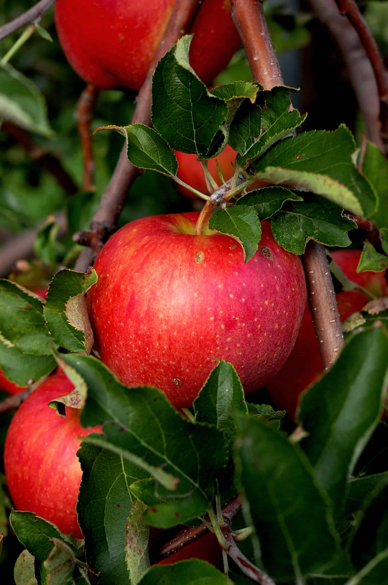

Health Aware
Life is great! But you have to be carful of some diseases and take notes of genaral good habits.
HEALTHY EATING
Most of us like junk food like burgers, pizza, donuts/doghnuts, etc. But unfortanatly these foods are not healthy for you. This is why we eat healthy foods like salads, or apples. Apples are tasty fruits like oranges and bananas. They have many vitamins and minerals, and lots of fiber.

EXERCISE
Exercising can be very painfull and tiring, but the more burn, the more stronger you get! "No pain, no gain!" You will be very tired, but will also feel very very great there is this place callled a "gym". A gym is a public plae to work out that has treadmills, dumbells, and many more.
.jpg)
YOGA
Yoga is a group of physical, mental, and spiritual practices or disciplines which originated in ancient India and aim to control (yoke) and still the mind, recognizing a detached witness-consciousness untouched by the mind (Chitta) and mundane suffering (Duḥkha). There is a wide variety of schools of yoga, practices, and goals in Hinduism, Buddhism, and Jainism, and traditional and modern yoga is practiced worldwide.
Two general theories exist on the origins of yoga. The linear model holds that yoga has Vedic origins, as reflected in the Vedic textual corpus, and influenced Buddhism; according to author Edward Fitzpatrick Crangle, this model is mainly supported by Hindu scholars. According to the synthesis model, yoga is a synthesis of indigenous, non-Vedic and Vedic elements; this model is favoured in Western scholarship.
STAY HAPPY!
Happiness is the one of the most important things for health. We always want our loved ones to be happy, even at the cost of our own happiness. Thats why it matters so much. So, you do need happiness in your life for more than just feeling good. Its very healthy and theres no point in living good life without happiness!